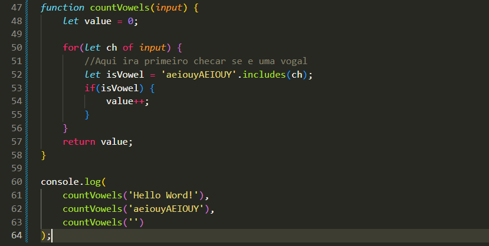
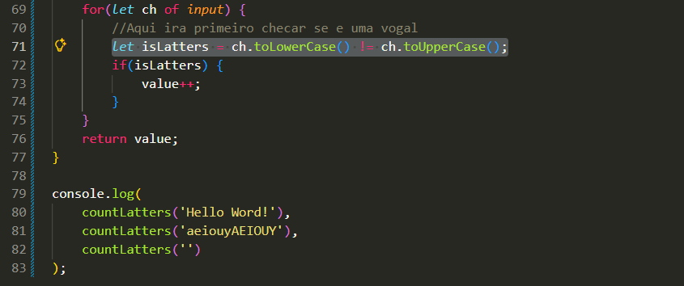

String Method Usage
Intro
Agora iremos aprender como usar o for para contar caracteres específicos em uma string.
Agora iremos aprender como usar o for para contar caracteres específicos em uma string.
Como exemplo, iremos criar uma função para contar as vogais.

Agora faremos um exemplo semelhante, porém ao invés de vogais, iremos contar apenas letras. Para isso, precisamos verificar se o caractere é realmente uma letra.
Utilizamos a seguinte lógica:
let isLetters = ch.toLowerCase() != ch.toUpperCase();
Se o caractere for uma letra, sua versão maiúscula e minúscula serão diferentes. Caso contrário (como espaços, números ou símbolos), o resultado será igual.
